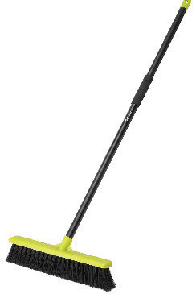
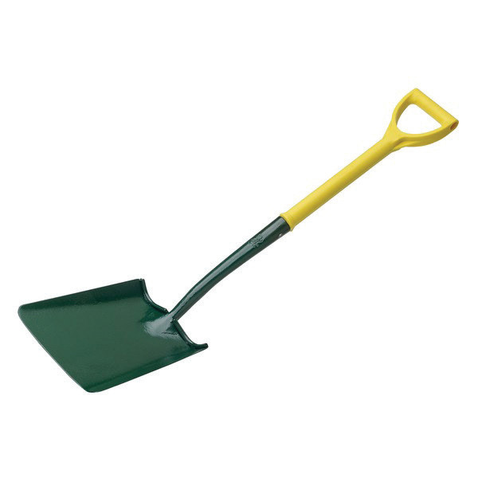
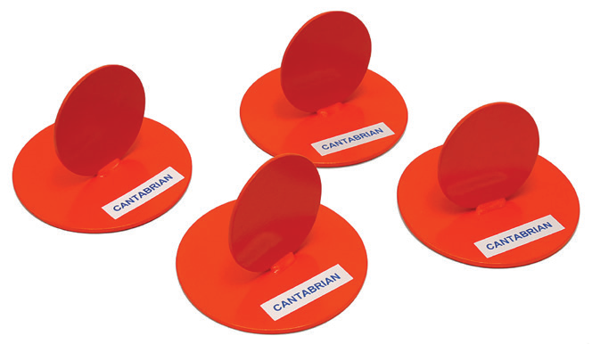
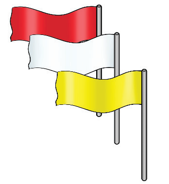
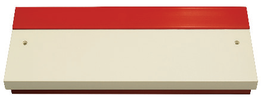

Broom |  | Clears sand from the runway. |
Shovel |  | Helps to maintain and move sand in the landing area |
Markers |  | Used to mark the different points of the long jump area |
Flags |  | Red and white flags are used to signal the validity of a jump while yellow flag are used for warning. |
Take-off board |  | Marks the designated take-off point. |